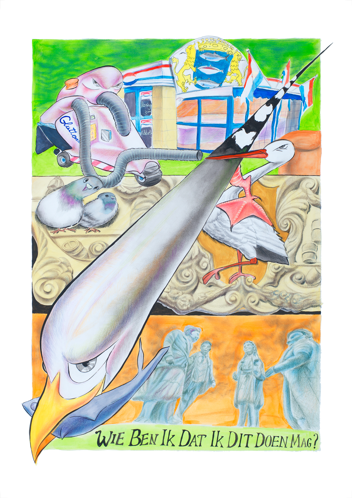
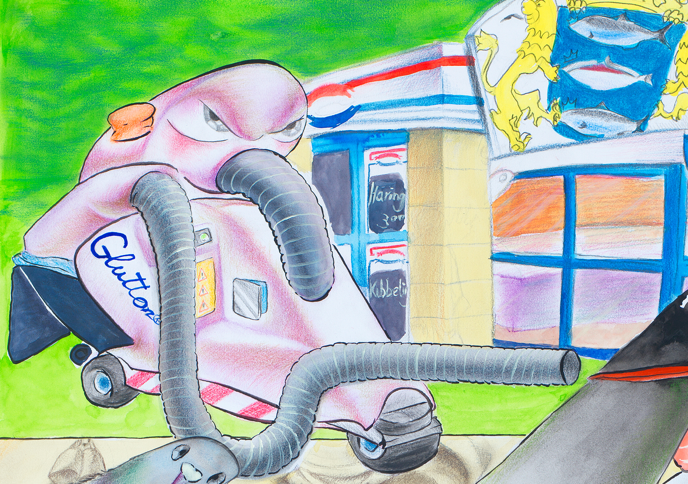
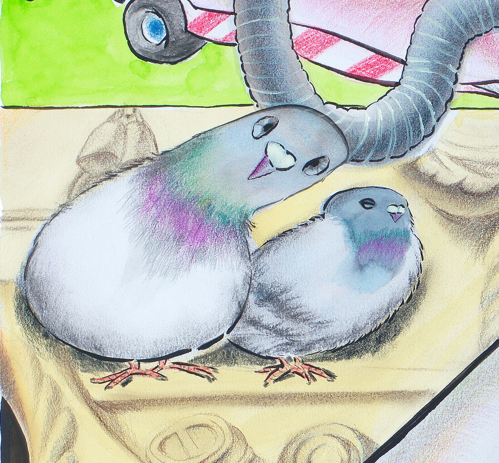
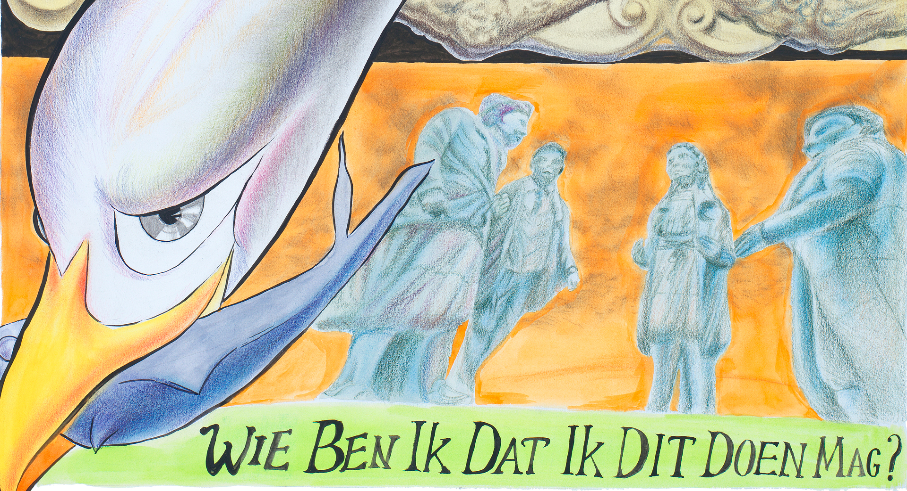

What's going on?
A wingless seagull, shaped like a bullet or a high-speed train, streaks across the canvas. One of the fish from the Scheveningen symbol atop the herring stall near Buitenhof is missing—it’s in the seagull’s possession. The bird lands on and rebounds off the body of the stork from The Hague’s coat of arms. It questions: Why am I not the symbol of The Hague?
Beneath the orange sky stands the statue of former Queen Juliana. Engraved on it is her famous quote: “Wie ben ik dat ik dit doen mag?”—a reflection of her humility on the day of her inauguration. But this question is also mine, as the appointed Stadstekenaar: Who am I to be the one doing this?
Medium
Water color and color pencil on paper,
50 cm * 65 cm
Edition
Press
Den Haag Central 2025-03-06 19.909
Stadstekenaar Kexin Hao portretteert Haagse Dieren
AD 2025-03-06
Den Haag kiest Kexin Hao als nieuwe stadstekenaar
Rijswijks Dagblad 2025-03-03
Kexin Hao door gemeente benoemd tot nieuwe Haagse stadstekenaar




